野外圣辉，极具威胁，神谕套，buff全满，19K，站撸布奇 13号优化
勇敢突进，锐利姿态，光耀正义，辉耀姿态，光耀决心|锐利姿态，辉耀姿态，退出光辉熔炉反色=勇敢突进，光耀正义，光耀正义>4000=光耀决心，光耀决心>4000=光耀勇气，光照符印，日光奔袭，太阳风暴，闪耀圆转，决心符印，束缚之刃，愤怒回旋，信仰之跃，晕眩巨锤，闪耀旋转，进入光辉熔炉2，光耀勇气=1=进入光辉熔炉3，进入光辉熔炉，愤怒祷词，退出光辉熔炉，日光奔袭>>2000=矛切剑，愤怒回旋>>2000=剑切矛，普攻|冲着我来|
勇敢突进,b,750|锐利姿态,z,350,,,,,,,,,,,0,,,,,,触发,1,8000,1|光耀正义,f1|辉耀姿态,c,1|光耀决心,f2|退出光辉熔炉反色,,,,,,,,,ifnot|光耀勇气,f3|光照符印,5,436|日光奔袭,2,320,,,,,,,,,,,,,,,,,触发,0,,0,,,6000|太阳风暴,4,561|闪耀圆转,3,550|决心符印,4,250,1,100,,,,,,,,,,,,,,,触发,0,,1|束缚之刃,5,484|愤怒回旋,2,1481,,,,,,,,,,,,,,,,,触发,0,,0,,,4600|信仰之跃,3,750|晕眩巨锤,2,1060,,,,,,,,,,,,,,,,,触发,0,,1|闪耀旋转,2,443|进入光辉熔炉2,f4,150,3,450,2,1060,,,,,,,0,,,,,,触发,1,15000,1|进入光辉熔炉3,f4,150,5,500,2,960,,,,,,,0,,,,,,触发,1,25000,1|进入光辉熔炉,f4,150,2,960,,,,,,,,,0,,,,,,触发,1,6800,1|愤怒祷词,6,350|退出光辉熔炉,f4,150,1,550,,,,,,,,,,,,,,,触发,0,,1|矛切剑,`,120,4,350|剑切矛,`,120,2,350|普攻,1|冲着我来,7,1
[&DQEqOxA+USUmDwAAigAAAFYdAABdHQAAZx0AAAAAAAAAAAAAAAAAAAAAAAACCQEyAAA=]
天界套、神谕套、狂战+天界混搭，猎龙。大剑+长矛，超级武勇、精确。海盗女王。这套循环跟之前直伤圣辉几乎一模一样，但是删减了部分技能，可手动把本地文件夹配置文件复制到野外，然后改名，只需要重新获取2个技能颜色就能直接用。
之前技能错了，武器是长矛+大剑，没有手枪的技能
优化了循环中，愤怒祷词的时间，增加了熔炉5的武器使用，利用职业3提供强化护盾后，才会使用熔炉5
也可手动释放愤怒祷词，或者加入hp判断。
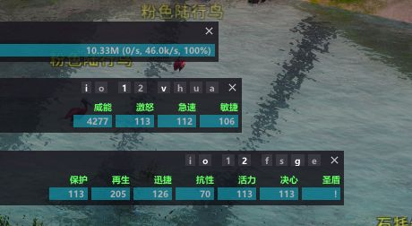
在打布奇时候到buff，全程稳定，适当移动下就行。
基本buff全部在90+
特性方面
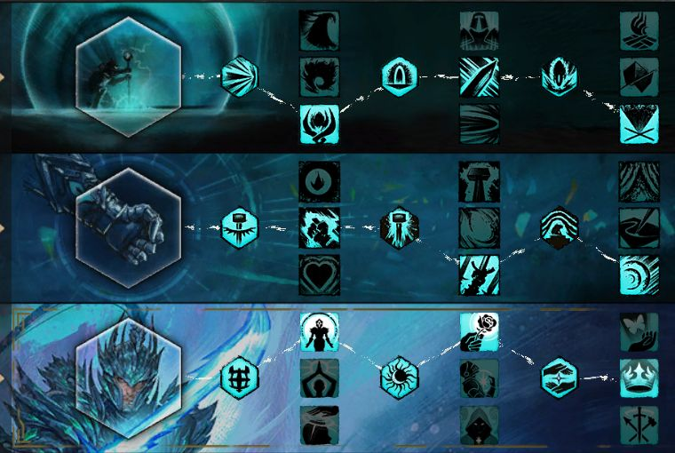
热诚，选择3加威能，否则不够
圣辉选择敏捷，输出反而高于增伤
依然选择海盗女王古物，这古物真好用，以前许多没急速的职业，直接毕业。
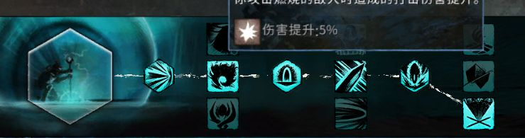
考虑到神谕buff维持时间比较长，在热诚特性可以把1-3改成1-2，威能已经超出太多。
圣辉特性里，因为敏捷能加快治疗技能cd，所以特性必须敏捷优先。
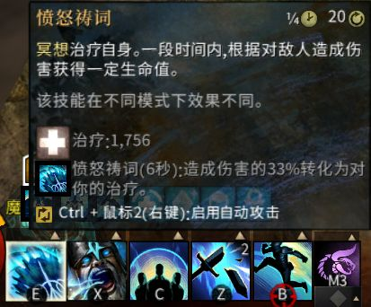
这个优先级放到切武器之前，在机场测试，基本全程满血，有敏捷加成，基本不会掉到半血以下。
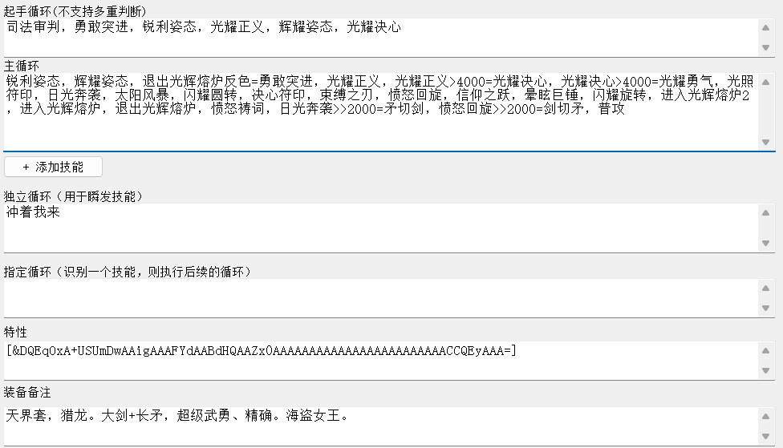
具体可以自测，机场有易伤buff测试，实战可把精确换成易伤相关的法印
评论列表（30）
切到长矛就切不回大剑了咋搞？
@HuAfan 大剑2，需要添加技能cd
@苏若卿 技能1，技能1>2000=技能2，表示技能1用后2秒，释放技能2。技能1>>1000=技能2，表示技能1游戏cd剩余时间大于1秒释放技能2，后者利用填入的游戏cd作为判断。
日光奔袭>>2000=矛切剑，愤怒回旋>>2000=剑切矛 怎么我不切武器呢，我的切武器按键是~键位，可是我设置了按键循环没切啊。
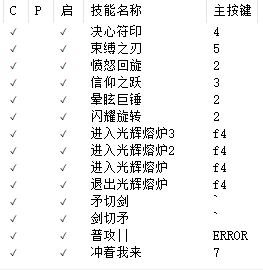
@大雕 取色是换武器的图标箭头
@大雕 检查版本，>>条件是后来加的，表示 这2个技能剩余cd大于2秒才切武器，另外检查f9中，这2个技能的技能cd是否有设置过。
@melis 谢谢好哥哥，我试试，琢磨琢磨
@melis 还是不行，昨晚设置一会了。难搞啊，取色的是箭头，他不切武器的
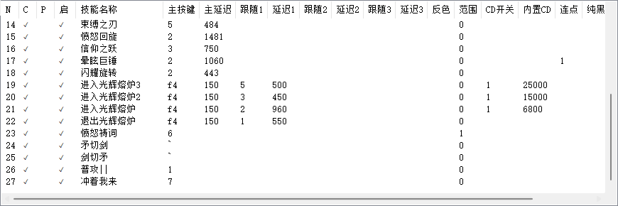
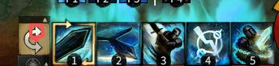
@大雕 还是不行啊
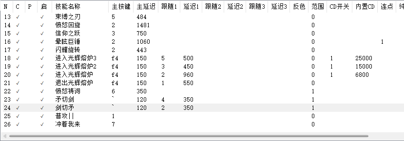
@大雕 大剑2，长矛2，你拖动到最后，看这2个技能，下面 技能cd参数里有没有写，如果还是不行，可以把 日光奔袭>>2000=矛切剑，愤怒回旋>>2000=剑切矛，改成 日光奔袭=1=矛切剑，愤怒回旋=1=剑切矛，不过后面的方法，就无法根据技能剩余cd判断切武器了。
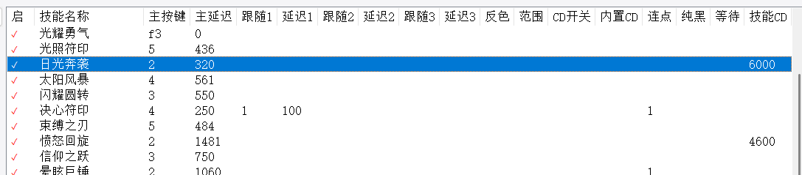
---*闪耀旋转*--- *闪耀圆转* --- 这是一个技能还是两个，取色时没弄明白？？？
@zhliwei2022 这一看就是没玩过圣辉的 ，闪耀旋转是熔炉锤2的二段技能，闪耀圆转是长矛3
@melis 是啊，圣辉技能太多，都蒙圈了
进入光辉熔炉2 光辉熔炉3 怎么取色
@萌新 全部f4
额，机场极具威胁站不住。。。古物得用萨斯洛奇才得。
@不落地的枫叶 你别说装备不对，极具威胁靠光环回血，辉耀姿态的屏障，还有治疗1的吸血，有敏捷的情况下是完全无限续航
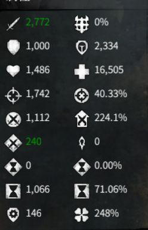
@melis 大佬 请问一下 大剑循环不会自动切武器 哪里出问题了啊，取色几个地方都不行
@残灯孤影忆潇湘 大剑2的，技能cd，要设置上
@melis 大佬 设置大剑2CD的 还是不行啊。大剑起手 只会放大剑3. 大剑2和大剑4 大剑5 都不会自动释放。矛起手到大剑第一轮循环都正常，大剑CD后就开始出错了
@残灯孤影忆潇湘 自己开调试模式检测，这明显是你有别的画质影响了，或者取色错
@melis 谢谢 ，已经解决了
M大这套换狂战士伤害更高，依旧极具威胁，法印还是武勇精确，通用技能没改，其他都照着星岬岛来的https://gw2.wishingstarmoye.com/admin/gw2build?url=https://snowcrows.com/builds/open-world/guardian/power-luminary-greatsword-spear
评论图片
@荔枝 食物是100威能70爆击效果，其他没有
@荔枝 大佬这套太强了，矛起手最高干到20K
评论图片
@荔枝 神谕可能好点，裸boss木桩，能19-20+
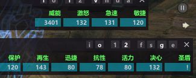
再有点稳固的话不得了，哈哈哈
大佬，司法审判是哪个技能啊
@荔枝 是手枪5